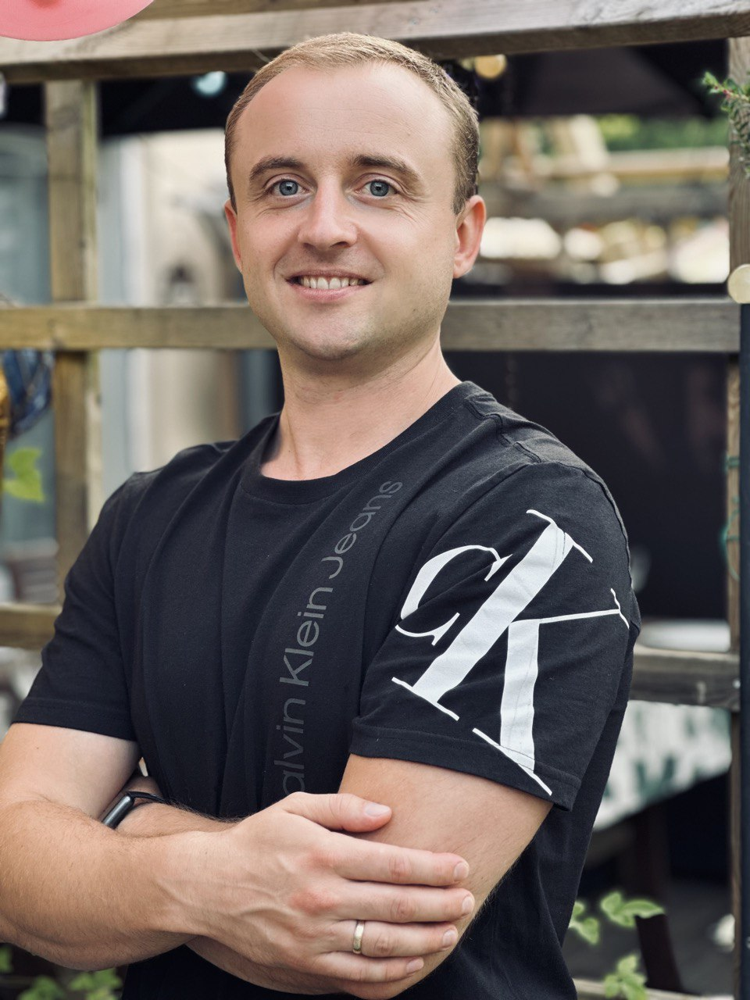

Denys Dyrda
Front-end developer
Contacts
m.t.: 076-214-63-85
email: 4irelly@gmail.com
linkedin: inkedin.com/in/denys-dyrda-562982212
Summary
Having many years of successful experience in building strong teams and implementing complex projects in construction, studying programming became an opportunity for me to realize my abilities and acquire a really interesting profession.
Education
Kyiv National University of Construction and Architecture
Heating gas supply ventilation and air conditioning
2006 - 2012
Technology Lyceum ORT
3D modeling
2002- 2006
Work experience
Project manager
ArtDen Development
October 2019 - October 2021
- leading role in project planning and development
- communicated with clients
- found suppliers and contractors
- created project documentation
- supervised the execution of work and compliance with deadlines
Project manager
Partner Construction
March 2019 - October 2019
- communicated with the customer
- participated in the planning and development of the project
- prepared technical documentation
- found suppliers, contractors' materials, and equipment
- took responsibility for the execution of work, controlled the quality
Project manager
Mastersky
September 2017 - March 2019
- communicated with the customer, participated in the development of the project
- prepared documentation (contracts, estimates, work schedule)
- found suppliers, contractors, materials and equipment
- supervised the execution of works, quality, deadlines
- prepared executive documentation
Soft Skills
- responsive, reliable
- motivated and responsible
- ready to learn new technologies
- sociable, able to work in a team
- I can prioritize tasks
- stress resistant
- working on my mistakes
Hard skills
languages
- Ukrainian - Native
- Russian - Native
- English - Advanced High
- Swedish - Advanced Mid